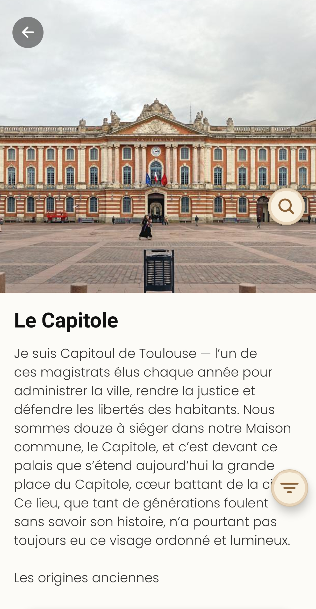

Concret, local, mémorable
Un événement “près d’ici” devient un point d’accroche. Les élèves retiennent mieux quand le contexte est situé.
Carte Contexte
ExploGo transforme la proximité en levier pédagogique : des données pertinentes et vérifiées, des récits immersifs et accessibles, et des usages concrets pour la classe comme pour les sorties.

Un même outil, plusieurs niveaux de lecture — et des élèves plus engagés.
Un événement “près d’ici” devient un point d’accroche. Les élèves retiennent mieux quand le contexte est situé.
Carte Contexte
Une lecture synthétique pour aller vite, et des détails pour aller plus loin : idéal pour un débutant comme pour un passionné.
Différenciation
Activités courtes, quiz, défis, scans sur place : l’app devient un support d’échanges et de participation.
Motivation Projet
Pour enseigner, il faut pouvoir faire confiance : ExploGo met l’accent sur des contenus pertinents (ce qui compte pour comprendre) et sur une relecture par un professeur d’Histoire-Géographie.
Sélection
Lieux et événements choisis pour leur intérêt historique et leur valeur pédagogique.
Vérification
Contrôle des informations et formulation claire, adaptée aux élèves.
Mise en contexte
Dates, enjeux, repères : l’élève comprend “pourquoi c’est important”.
Les élèves entrent dans l’histoire par le récit : une narration claire, des repères, et un langage adapté.
Exemple d’angle pédagogique
“Pourquoi ce lieu a compté ?”
Un lieu n’est pas qu’un point sur une carte : il raconte un changement, un conflit, une invention, une mémoire. ExploGo aide l’élève à relier le lieu au chapitre.
Narration Clarté Sources
Les réponses essentielles, côté classe.
Oui : les fiches privilégient d’abord la compréhension (clair, structuré), puis proposent des repères et des éléments pour approfondir. Cela fonctionne autant avec des élèves en découverte qu’avec des passionnés.
Les informations sont sélectionnées pour leur intérêt historique, mises en contexte, puis relues et vérifiées par un professeur d’Histoire-Géographie.
Oui : l’usage “sur le terrain” (repérage + scan à proximité) aide à guider un parcours et à rendre les élèves acteurs : observation, collecte, restitution.
ExploGo vous accompagne en classe, en sortie et dans vos projets.